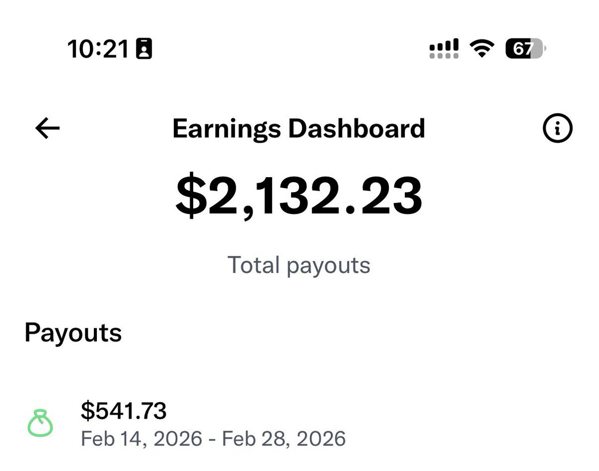
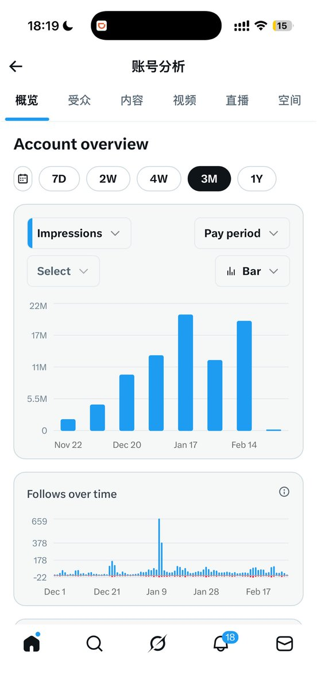

Minokakay
@Minokakay
@BI3BXI 挺多的，但我不想随便找人互关，因为无法筛选是否符合我对不污染我的timeline或者圈子的要求，可能等我哪天满了500premium要求再开吧。话说这个是不会过期的吗？也就是说我达到要求了再来前面的payback也能拿到？


你是要气死铨酱么（淡推中）
@BI3BXI
@Minokakay 我这个号这段时间反正……挺难评的 https://t.co/zumB4jSV7h